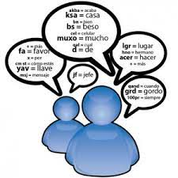

La Degeneracion del Lenguaje en Internet se podría definir como el uso modificado del lenguaje (ya sean abreviaciones de palabras, imagenes, entre otros) por parte de los usuarios. En las últimas décadas, el uso del Internet ha influido en la forma en que laa gente se comunica. Anteriormente, el costo entre cada mensaje de texto era grande, lo que provocó la creación de abreviaturas como: k (¿que?), PQ (¿Por que?), entre otros.
 Caracteristicas